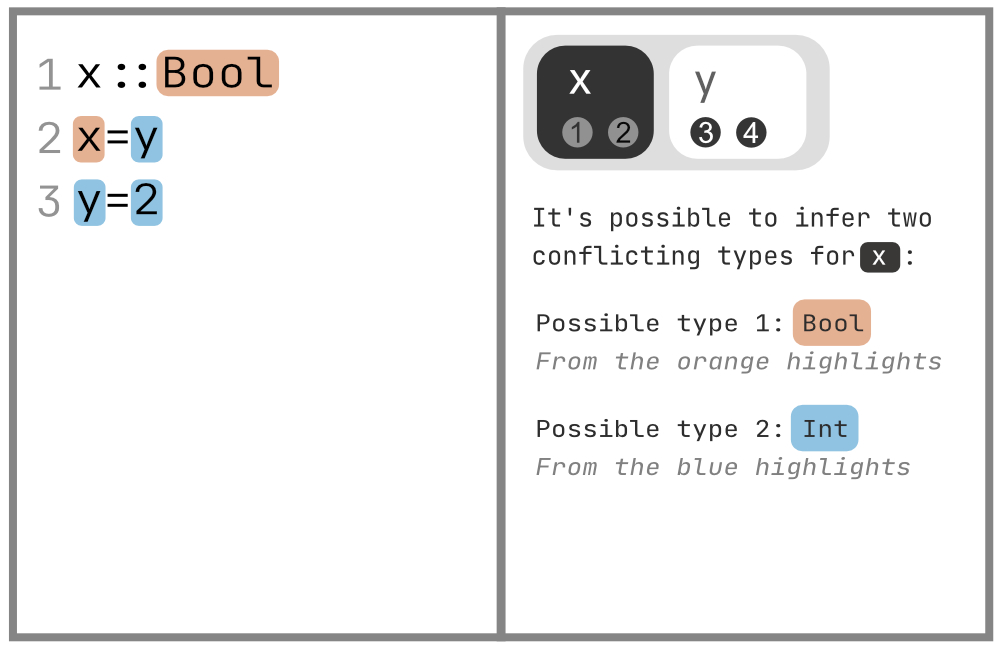
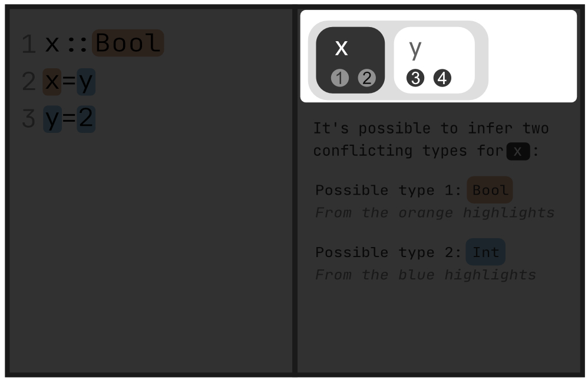

Chameleon Window Layout
Chameleon consists of an and a



Uncertain expressions and cards
Debugging window shows all the 'uncertain' expressions as a list of cards. Clicking on a card activates it. The is black, are white. The is specific to the active card.



Possible types
An expression is uncertain when it can be typed in two different ways. We refer to the them as and .


Highlights
Highlights are fragments of code with colored backgorund. Highlight can be either or They are evidence from which Chameleon deduces the possible types.


Highlights (color switching)
Highlights may switch color (blue to orange or vice versa) when the active card (or deduction step ) changes. Notice the highlight of y on line 2 changes color when we switch the active card from to .
Deduction step (UI)
A deduction step is (one blue and one orange) with black outline, and showing how the two are related to one another.


Deduction step (control)
Each card may contain one or more steps. Click on a step will activate it. At any time there can be 0 or 1 and any number of .


Deduction step (example)
When activating a step, some highlights may switch color. The message in the text box changes accordingly. For example, clicking on and in card x will result in the editor window showing two different deduction steps.